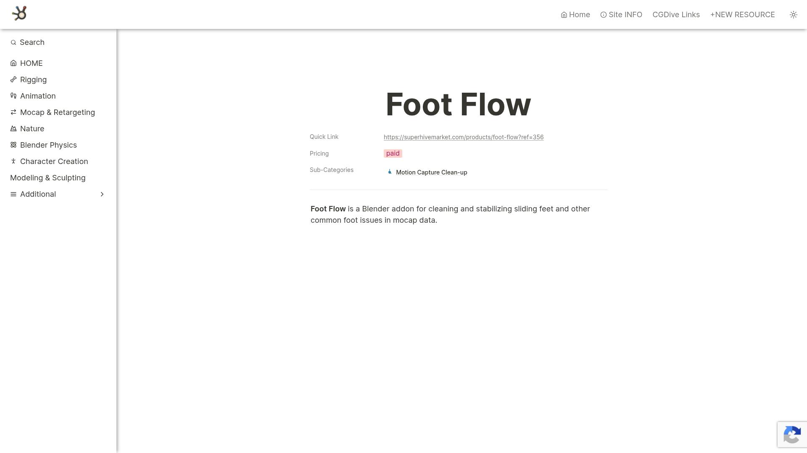

Foot Flow 是一款付費的 Blender 外掛，透過 Superhive Market (原 Blender Market) 販售。專門用於清理和穩定 Mocap 動畫中的腳步滑動及其他常見腳部問題。相比免費的 Foot Locker（簡單閾值鎖定），Foot Flow 提供更專業、更自動化的腳步修正方案。
解決的問題：

Foot Flow — 腳步動畫修正工具展示
| 功能 | 說明 |
|---|---|
| Foot Sliding Fix | 自動偵測並修正腳步滑動 |
| Ground Contact Stabilization | 穩定接地狀態的腳部 |
| Foot Issues Clean-up | 處理各種常見腳部動畫瑕疵 |
| Mocap 專用 | 專為 Motion Capture 數據清理設計 |
| 面向 | Foot Locker（免費） | Foot Flow（付費） |
|---|---|---|
| 原理 | 簡單閾值鎖定 | 智慧偵測+修正 |
| 自動化 | 手動指定幀範圍 | 更自動化的處理 |
| 功能範圍 | 只有位移鎖定 | 滑動+穩定+接地 |
| 適合場景 | 偶爾快速修復 | 大量 mocap 清理 |
在 CGDive (addons.cgdive.com) 分類中，Foot Flow 被歸類為：
| # | 資源 | 連結 |
|---|---|---|
| 1 | Superhive Market 產品頁 | https://superhivemarket.com/products/foot-flow |
| 2 | CGDive 工具頁 | https://addons.cgdive.com/tools/foot-flow |
> 注意：付費工具，詳細教學通常在購買後提供。
| 項目 | 內容 |
|---|---|
| 價格 | 付費（Superhive Market，確切價格需查看產品頁） |
| 授權 | 商業授權（Blender Market 標準） |
| 平台 | Blender |
| 販售平台 | Superhive Market (原 Blender Market) |
| 開發者 | 未公開確認（需查看產品頁） |
| 面向 | 評估 |
|---|---|
| 問題對應 | ✅ Kimodo 動作的腳步滑動是主要痛點 |
| 工作流位置 | ✅ retarget 後的清理環節 |
| 自動化 | ⚠️ 比 Foot Locker 好但可能仍需手動操作 |
| 品質 | ✅ 專業工具，品質應優於簡單閾值方案 |
Kimodo BVH → Retarget（BVH Retargeter / ARP FK mode）
→ Foot Flow ← 本工具定位
- 自動偵測接地幀
- 修正滑動
- 穩定腳部
→ Export
[Kimodo AI 生成 BVH]
↓
[Retarget]
↓
[Foot Flow] ← 本工具定位
- 專業腳步滑動修正
- 接地穩定
- 腳部瑕疵清理
↓
[Root Motion Transfer]
↓
[遊戲引擎]
核心價值：
與其他腳步工具的定位區分：
| 工具 | 定位 | 時機 |
|---|---|---|
| ARP IK Retarget | retarget 時直接解決 | 最前端 |
| Foot Flow | retarget 後專業修正 | 中間 |
| Foot Locker | 最後手動微調 | 最末端 |
購買建議：